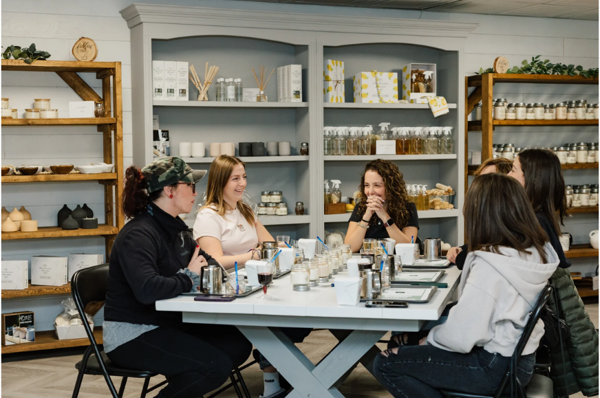
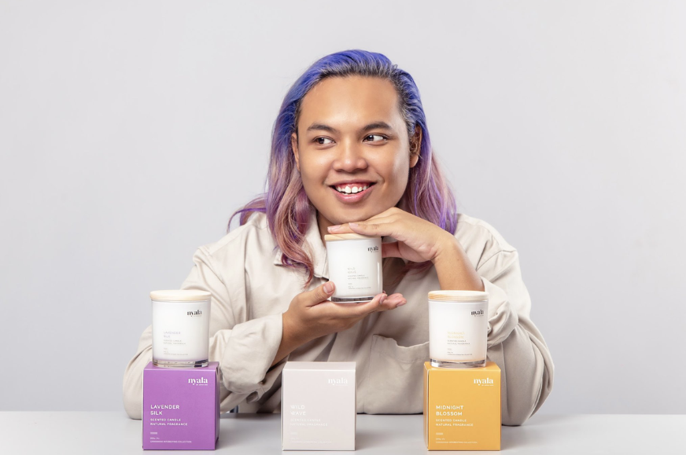

Our Blog

05 April
Candle Making Workshops
Hosting candle-making workshops is a great way to engage customers and allow them to experience the craft behind the products. During these workshops, participants can learn how to create their own scented candles, choosing from various fragrances, wax types, and molds. This activity not only promotes the brand but also builds a connection with customers by offering a hands-on, creative experience. It could also serve as a team-building event for corporate clients or a unique birthday celebration for individuals.

25 October
Seasonal Candle Collection Launches
Launching seasonal candle collections is a great way to capitalize on the changing seasons and holidays, creating a sense of anticipation among your customers. For example, you could release limited-edition collections for Christmas, Fall, or Spring, featuring scents that align with those times of year (e.g., cinnamon and pine for winter, or floral and citrus for spring). These special collections can generate excitement, boost sales during peak seasons, and keep the brand fresh and relevant in the minds of customers.

14 March
Scent Discovery Events
Host "Scent Discovery" events where customers can explore various fragrances in a relaxed setting. You can have stations with different candle scents for them to experience, helping them discover which fragrances appeal to them the most. This encourages customers to experiment with new scents, improving their overall experience with your brand and boosting sales.

06 April
Collaborations with Local Artisans or Influencers
Partner with local artisans, influencers, or other small businesses for special collaborations. This could involve creating a unique candle scent inspired by a local artist's work or incorporating eco-friendly materials in the candles in collaboration with sustainability influencers.Expands brand reach, attracts new customers, and builds relationships within the community.